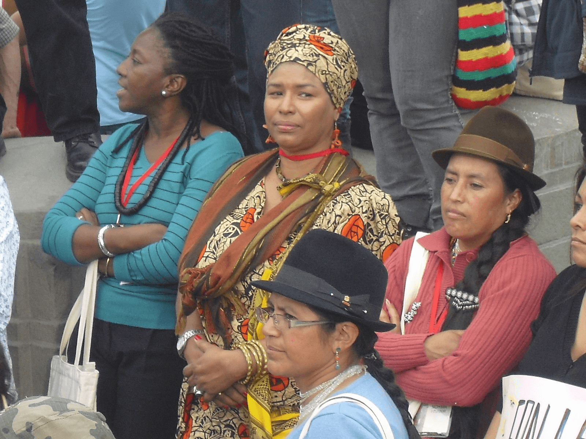
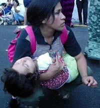
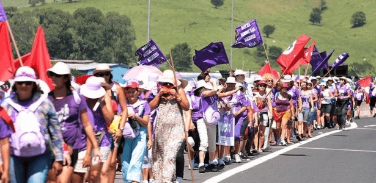
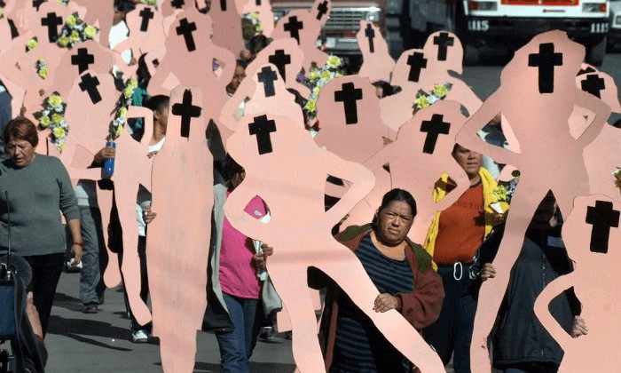
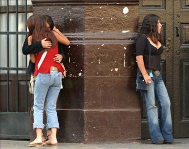
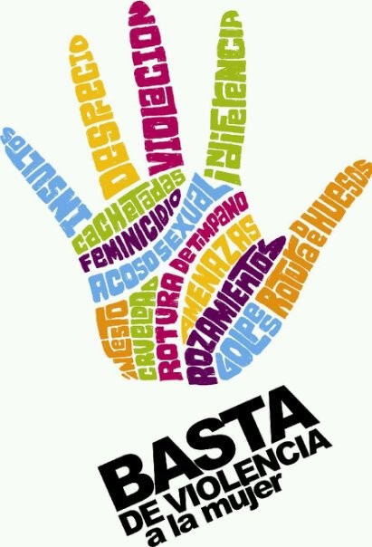
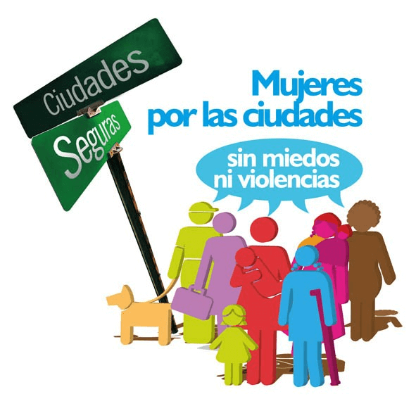
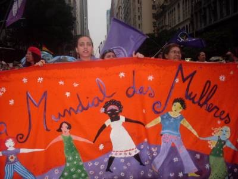

Las ciudades desde la perspectiva de género
La transformación de la vida urbana, por los acelerados cambios económicos, sociales, tecnológicos y culturales, ha traído una modificación sustancial del espacio público, al reformularse las interacciones sociales, el uso del tiempo, las formas de movilidad y de comunicación. Desde distintas disciplinas se apunta a que vivimos una realidad fragmentada, con muros reales e imaginarios que dificultan la comunicación y el reconocimiento.
El espacio público es el lugar de la interacción social y de construcción de identidades colectivas. Es el producto de interrelaciones sociales que alimentan el proceso de producción y reproducción de ese espacio, a través de prácticas sociales de dominio y resistencia de las y los actores sociales. Es tanto el lugar geográfico de la acción (contenedor) como la posibilidad de formar parte de esa acción. De allí que sus dimensiones no sean sólo físicas, sino también sociales y simbólicas. No es un contenedor neutro de los hechos sociales, pues si bien las características del espacio pueden ser determinantes en las conductas sociales, estas conductas también inciden en la construcción de determinadas características de ese espacio.
El espacio, entonces, no es una variable explicativa más, sino que está en la constitución misma de las relaciones sociales y se encuentra, por lo tanto, lleno de poder y simbolismo.
Los fenómenos sociales no ocurren fuera del espacio ni fuera del tiempo. El espacio es el escenario, el soporte físico para actividades cotidianas orientadas a la satisfacción de necesidades urbanas colectivas, y puede ser fuente de creatividad e imaginación. Influye en la configuración de determinados comportamientos y representaciones sociales, así como en la manera de relacionarse con los demás.
Es en esta dimensión interconectada donde se localizan y actúan las dimensiones de género, posicionando y organizando los roles de las mujeres. Para las mujeres, esta interacción es de crucial importancia, porque el espacio aparece como mediador entre el tiempo social, el doméstico y el individual de las mujeres, multiplicando o minimizando las contradicciones entre ellos.

El espacio, entonces, no es fijo y estable. Se construye y, por lo tanto, es dinámico y cambiante.Massey señala que la construcción del espacio permite que algo visto como abstracto se convierta en lugar gracias a la experiencia y las acciones de los individuos que, viviéndolo cotidianamente, lo humanizan y llenan de contenidos y significados. Doreen Massey, “A Global sense of Place”, en “Space, Place and Gender”, Minneapolis: University of Minnesota Press, 1994. Va generando su propia historia, produciendo y modificando sentidos y valoraciones de acuerdo con la acción e interacción de los/las actores sociales, de acuerdo con sus múltiples relaciones y exclusiones en razón de la clase, raza, edad, sexo, género, orientación sexual, residencia geográfica, en las cuales el género tiene una expresión fundamental.Históricamente, la generación del espacio público estuvo marcada por múltiples desigualdades, entre ellas y prioritariamente la diferenciación de género. Fraser alude a que la nueva esfera pública republicana se construyó en oposición a la cultura de salón, más accesible a las mujeres. En Nancy Fraser, “Repensando la esfera pública: una contribución a la crítica de la democracia actualmente existente”, Ecuador Debate 46 (1997). Pero el espacio es también un lugar privilegiado para generar propuestas alternativas, pues en él se tejen y expresan prácticas de resistencia, lo que hace que sea un aspecto esencial para las políticas de inclusión, “donde los grupos marginados pueden confrontar ideologías dominantes”.Anna Ortiz Guitart, en “Reflexiones en torno a la construcción cotidiana y colectiva del sentido del lugar en Barcelona”, Polis 1 (2004).
Tiene el potencial de ser lugar de encuentro y solidaridad con el Otro / Otra, entrelazando y tejiendo relaciones entre personas sin vínculos previos, convirtiéndose en lugar de interacción social y de construcción de identidad colectiva. En este proceso, la construcción social y la subjetiva se desarrollan simultáneamente.
Es en el espacio público donde grupos subalternos pueden desarrollarse como sujetos sociales democráticos. Desde esta perspectiva, democracia y espacio público están orgánicamente ligados a la acción de la ciudadanía. Allí se construyen y legitiman los derechos como expresión de igualdad de personas diversas, alargando el espacio del ejercicio ciudadano. Su cualidad se decide por la praxis ciudadana, donde los conflictos y luchas por derechos, basados en principios y valores éticos, tienen indiscutible centralidad en la construcción de una práctica democrática. El privilegiar y valorizar el espacio público como componente clave de la organización urbana y de la construcción ciudadana significa hacerse eco de algunos de los derechos fundamentales de la ciudadanía: a la asociación, a la identidad, a la polis, a la consolidación de nuevos derechos.
Por lo mismo, espacio público es también un concepto y terreno de disputa frente a perspectivas encontradas en relación con las orientaciones de las políticas espaciales, donde, por ejemplo, el privilegiar la perspectiva privada mercantil requiere un espacio público marginal, que no incomode o interfiera con la lógica privatizadora y excluyente del mercado y donde las políticas públicas son minimizadas. Desde la perspectiva de los / las actores sociales y las lógicas de apropiación del espacio público, la disputa es por su uso y apropiación real y simbólica. Puede ser una apropiación democrática o excluyente. Esta apropiación excluyente es posible porque se sustenta en la legitimidad —en sus dos variantes: legitimidad y poder— arraigada en la defensa de la propiedad privada —calles o parques cerrados, uso institucional de instalaciones militares, por ejemplo— y la apropiación excluyente, ilegítima y en disputa: bandas o grupos de jóvenes en los barrios que impiden acceso de mujeres, niñez, tercera edad… Es una disputa no sólo territorial / geográfica, sino también social y cultural, por recuperar el espacio, evitando la degradación del tejido social.La privacidad no es neutral en relación con el género —incluso en la forma de inserción—: en lo masculino, privacidad coincide con individualidad; en lo femenino, coincide con domesticidad: negación de lo propio, no sujeto. Elizabeth Jelin, “Las familias latinoamericanas en el marco de las transformaciones globales: hacia una nueva agenda de políticas públicas”. Reunión de Expertos Políticas hacia las familias, protección e inclusión sociales; Santiago, Cepal, 28 y 29 de junio de 2005.
Sin embargo, la legitimidad de apropiación de espacios públicos no tiene necesariamente que ver con la seguridad que ellos puedan ofrecer. Grupos excluyentes pueden no causar temor en determinados lugares, porque son conocidos, porque pueden cumplir funciones de defensa y solidaridad con los lugares específicos donde actúan. —“Son narcos, pero son mis narcos, de mi barrio...”—. Igualmente, en mucho de esta apropiación excluyente se expresa también la existencia de otro tipo de exclusión: lugares a los que no se puede acceder por falta de recursos económicos (clubes, pubs). En ese sentido, la apropiación excluyente y en disputa expresa también frustración frente al espacio público.
Cuestionar y disputar la legitimidad de apropiaciones excluyentes es fundamental para avanzar en la construcción de un espacio público más inclusivo. En ese sentido, como lo plantea Jordi Borja, “el espacio público puede ser lo que las personas quieran que sea”. No hay espacio público per se. La gente, al usarlo, lo conquista, se lo apropia. Lo que define el espacio público es su uso, no su estatuto jurídico.
¿Qué dificulta ese cuestionamiento de la legitimidad del uso y, por lo tanto, de disputa del espacio público?
Esta disputa de intereses y presencias revela una característica sustancial del espacio público: la heterogeneidad y multidimensionalidad de relaciones de poder que alberga y produce. En ese sentido, no contiene categorías uniformes de mujeres y hombres, tanto por las diferencias en edad, clase, etnia, territorialidad, como por las que existen entre las mismas mujeres y hombres en contextos específicos.
Esta heterogeneidad es ambivalente. Por un lado, puede ser vista como fragmentación y aislamiento, expresión de una característica de la actual forma de urbanización y del posicionamiento de los actores sociales. Por otro, es una de las riquezas del espacio público, porque alude a la diversidad de perspectivas, formas de vida, formas de apropiación del espacio e intereses diferenciados de las ciudadanías, con una pluralidad de visiones y, eventualmente, sentidos de negociación y reciprocidad.

Sin embargo, reciprocidad implica también considerar a la Otra / Otro —simbólica y efectivamente— como par. No es posible construir intereses comunes sin esta perspectiva de paridad en la pluralidad, tanto en los usos sociales del espacio público como en su producción y reproducción. Pero las limitaciones para que las mujeres sean consideradas pares son enormes. Para entenderlas, el debate sobre los contenidos, alcances, articulaciones y diferencias entre el espacio público y el espacio privado es clave si se quiere ubicar la situación y posición de la mujer, la violencia de género y la posibilidad de generar ciudades más seguras para ellas.
“Lo privado es político” es uno de los aportes feministas más significativos, como propuesta teórica y política, porque recupera la visibilidad de las relaciones de poder en la vida cotidiana, y la dimensión subjetiva como prioridad política y ética. Lo público y lo privado son construcciones sociales que arrastran las perspectivas y subjetividades de los / las actores. Son, por lo tanto, espacios de conflicto, porque ocultan/contienen situaciones de desigualdad, expresan un inicial reparto y posicionamiento de los roles masculinos y femeninos —hombres en lo público, mujeres en lo privado—, siendo de esta forma fundamentales en la formación de las subjetividades de género.La privacidad no es neutral en relación con el género —incluso en la forma de inserción—: en lo masculino, privacidad coincide con individualidad; en lo femenino, coincide con domesticidad: negación de lo propio, no sujeto. Elizabeth Jelin, “Las familias latinoamericanas en el marco de las transformaciones globales: hacia una nueva agenda de políticas públicas”. Reunión de Expertos Políticas hacia las familias, protección e inclusión sociales; Santiago, Cepal.
Tradicionalmente el espacio privado y el espacio público han sido vistos en forma dicotómica, sin relación de continuidad ni interrelación, congelando los contenidos de uno y otro: el espacio privado es el espacio de la afectividad y el espacio público el de la construcción ciudadana. De esta forma, la distinción entre lo público y lo privado está marcado por la naturalidad y la invisibilidad de las relaciones de poder que alberga el espacio privado. Esto lleva a percibir en el imaginario que el espacio privado de las mujeres es lugar de protección y afecto, ocultando su contenido de violencia, exclusión y desempoderamiento, lo que a su vez oscurece el hecho de que el espacio público es también un espacio de violencia contra las mujeres. Y, al mismo tiempo, oculta el que el espacio público puede también jugar un papel de desahogo del espacio cotidiano y otorgar un aislamiento temporal de los constreñimientos e inequidades en el mundo privado, cumpliendo así un rol privilegiado en el enriquecimiento de los vínculos privados, al facilitar el desarrollo de cualidades y habilidades que vinculen la vida privada con el mundo público. Los espacios públicos, desde esta perspectiva, en vez de ser vistos como antagónicos a la vida privada y familiar, enriquecen estos vínculos, contribuyen a la sociabilidad, a generar demandas y posibilidades de diálogo con las autoridades, alimentando el ejercicio ciudadano y aumentando la autoestima de las mujeres, dándoles posibilidades de volver a lo familiar en nuevas condiciones.
En ese sentido, los espacios públicos no sólo contienen y expresan relaciones de dominación entre los géneros, sino múltiples dimensiones sociales, económicas, culturales y políticas. Desde la perspectiva de género, se puede promover conductas democráticas de participación y respeto, que se orientan a reducir las discriminaciones sociales en toda su variedad. La producción del espacio público es un factor de fortalecimiento de los lazos sociales, capaz de posibilitar la prevención de la violencia. Rehusarse a aceptar la violencia en el espacio público puede facilitar la erradicación de la violencia contra la mujer y niñez en lo privado. Sin embargo, ambos espacios son vistos como tan disociados, que los cambios en uno no se traducen necesariamente en la transformación del Otro. Pero las relaciones de poder y las disputas para confrontarlas, son precisamente lo que da sentido de continuidad a lo público y lo privado.
Igualmente, lo público ha ingresado con mucha fuerza al espacio privado. Los medios de comunicación impactan la cotidianidad y generan un espacio público metido en la intimidad, en la privacidad, lo que da lugar a un espacio íntimo público que puede ser muy invasivo y violento, dados los tipos de mensajes que genera. Y aunque depende de la voluntad que las personas se expongan a su impacto o lo eviten, esos mensajes son siempre un recurso y un escape ante el vacío de comunicación en el espacio público.
Existen también espacios intermedios, semipúblicos y semiprivados, en los que se dan con más intensidad las redes de solidaridad e intercambio —espacios de los barrios—. “La privatización intensiva del espacio público encuentra algunos contrapesos en las redes de solidaridad”. Es decir, si bien ambos espacios son diferentes analíticamente, con lógicas de acción diferentes y con disputas aparentemente diferentes —parecería que la disputa en lo público es por modificar la exclusión y la desigualdad, y la experiencia en lo privado es confrontar la inequidad—, lo que ocurre en uno —comportamientos y experiencias— contribuye a moldear lo que sucede en el otro. Son diferentes, pero las personas son las mismas en ambos espacios. Por lo tanto, la separación analítica tiende a diluirse.
Un acercamiento más fructífero es ver que entre ambos espacios existe un sentido de continuidad y una relación dinámica: Lo público se constituye a partir de nudos de encuentros y desencuentros en dos ámbitos, privado y público, más las habilidades y experiencias que se adquieren o practican en cada uno de ellos. Y éste es un proceso también dinámico y en permanente mutación. En esta complejidad e interrelación dinámica de los espacios, lo político es decidir qué es público y qué es privado.

La violencia urbana es multifacética, multidimensional y compleja. Su existencia es producto de relaciones sociales inequitativas en las ciudades, ubicadas en contextos y procesos históricos específi cos. Las ciudades se han vuelto más violentas, y la violencia se ha hecho más visible. A esta visibilidad ha contribuido la existencia de muchos más actores sociales pugnando por el acceso a la ciudad / espacio público, evidenciándose una pluralidad de causas, de experiencias y vivencias de la violencia. Su mayor visibilidad ha generado lentamente un marco institucional múltiple y un conjunto de instituciones privadas y públicas que actúan sobre ella: gobiernos nacionales, gobiernos locales, organizaciones de mujeres, organizaciones de derechos humanos, etc.
En la violencia urbana intervienen diferentes dimensiones y escalas, que permiten distintos niveles de análisis. En un continuum, podemos encontrar múltiples dimensiones, que se implican e influyen entre sí: entre el nivel macro y el nivel micro está un conjunto de escalas que comprenden regiones geográficas, naciones, ciudades, barrios, grupos, hogares, cada una de ellos con sus propias exclusiones y violencias simbólicas o concretas.

A nivel de lo macroestructural —tiempos y espacios extensos marcados por la creciente globalización de ámbitos políticos, económicos y culturales—, se desarrollan sistemas económicos con reglas de acumulación y de comercio que profundizan la inequidad entre países y regiones y acentúan la concentración de riqueza y exclusión de las mayorías. Lo macrorregional, caracterizado por un desigual desarrollo democrático y la consiguiente debilidad de la institucionalidad democrática, ha tenido una larga historia de violencia política, con efectos significativos en los países y en la visibilidad de la violencia de género. Ello porque la violencia política tendió a ocultar la violencia contra las mujeres en el espacio privado —y también en el espacio público—.Como lo expresan las violaciones a las mujeres consideradas botín de todos los bandos y que han llevado a que la Corte Internacional los considere crímenes de lesa humanidad.
A niveles nacionales, fenómenos como el creciente debilitamiento del Estado-nación y la creciente privatización de los servicios y las políticas de bienestar han debilitado también las instituciones responsables de llevar a cabo medidas para la prevención, atención y castigo de la violencia.
En las ciudades se da una particular concepción del desarrollo urbano, expresada en crecimiento sin planificación, alta densidad demográfica, precariedad o dificultad para acceder a servicios en amplios sectores de la población, en relación con vivienda, iluminación, transporte, que alarga las distancias entre el hogar y los lugares de trabajo remunerado. La creciente privatización y la desregulación de los servicios de la ciudad impactan crecientemente en las mujeres, al exigirles más tiempo para suplir la falta de responsabilidad del Estado frente a la niñez o la tercera edad., condicionando y restringiendo así sus usos del tiempo. Todo ello debilita las dinámicas de cohesión social y produce ciudades espacialmente fracturadas en zonas, clases, culturas diferentes, con repercusiones en una organización espacial de las desigualdades e inequidades que impide que las personas se vean o imaginen y piensen como pares.
En estas condiciones, la violencia directa (robos, asaltos, agresiones) tiene más impacto real en los hombres, pero ejerce un impacto subjetivo y duradero en el imaginario de las mujeres, lo que limita fuertemente su movilidad y autonomía.
Una dimensión de violencia no considerada activamente dentro de la violencia urbana es la violencia contra las mujeres al interior del espacio privado, aunque aparece como la más persistente y la más extendida. Y ella se expresa en todos los sectores sociales, sin distinción de clase, raza, etnia, edad, orientación sexual o tiempo histórico.
Como hemos mencionado la violencia e inseguridad afecta al conjunto de la ciudadanía, pero es vivida por hombres y mujeres de maneras distintas. La violencia contra las mujeres en las ciudades, no solo es referida a los delitos tradicionales que dificultan la vida cotidiana, tales como los hurtos, asaltos, secuestros, violaciones y homicidios.
Inciden de igual manera, pero en diferente grados y modalidades, las manifestaciones de violencia efectiva o simbólica hacia las mujeres.
El derecho a la ciudad por parte de las mujeres se ve obstaculizado por la sensación de inseguridad y el temor a ser agredidas, lo que impacta directamente en su vida cotidiana, limitando su movilidad y autonomía para el uso y apropiación de la ciudad, particularmente en determinados horarios y lugares considerados o vivenciados peligrosos.
La peligrosidad de estos lugares se vincula a:
La percepción de inseguridad y los lugares asociados a la misma se vincula también a la existencia o no de redes sociales de protección entre vecinos/as y / o distintos grupos sociales y su mayor o menor identificación con el lugar en el que viven.
Específicamente las mujeres reconocen como lugares peligrosos:
Al abordar la violencia urbana desde las voces de las mujeres, ésta se manifiesta de distintas formas, pero tienen en común el hecho de que los agresores son en la mayoría de los casos varones, desdibujando así las fronteras de la violencia vivida en el espacio privado —ejercida por individuos pertenecientes al círculo familiar cercano— y la violencia en el espacio público —ejercida por desconocidos—.

Los relatos de las mujeres hacen referencia a:
No podemos desconocer la doble victimización por la que atraviesan las mujeres, luego de un hecho de violencia. Esta se refiere a la nueva violencia que sufren las mujeres cuando intentan dar cuenta o denunciar la situación por la que han atravesado. Esta violencia es efectuada en gran medida por el propio Estado, a través de las instituciones policiales y judiciales a las que recurre la mujer para pedir justicia y contención.
También se ve sometida a este proceso cuando en los ámbitos familiares y comunitarios es responsabilizada de la violencia que sufrió —“ella lo provocó”, “porque no tuvo cuidado”—, o se subestima la agresión —“no fue tan grave”—.
La violencia hacia las mujeres no acaba en el mismo hecho violento, sino que sigue actuando a través de sus consecuencias, ya que las mujeres desarrollan sentimientos que atentan contra su autoestima y seguridad, al mismo tiempo que modifican su vida cotidiana, restringiendo sus movimientos en la ciudad y los espacios públicos, la participación política, cultural y en algunos casos hasta abandonan el trabajo o estudio.

Cualquier situación de violencia sufrida por la mujer, impacta en el colectivo de mujeres como situación a la que están expuestas por pertenecer al mismo grupo. Si estas situaciones no son abordadas correctamente y no se disponen recursos sociales e institucionales para ello, se multiplicarán las acciones defensivas y de estrategias individuales que implican mayor restricción de movilidad para las mujeres en la ciudad.
La violencia no solo lesiona el derecho que tienen a la integridad física, psicológica y sexual, sino que les resta posibilidades de desarrollo y participación plena en la vida política, económica, social y cultural.
Salud física
Salud sexual y reproductiva
Salud mental
Educación
Empleo
Participación
Los derechos humanos de la mujer y de la niña son parte inalienable, integrante e indivisible de los derechos humanos universales [...] La violencia y todas las formas de acosos y explotación sexuales, en particular las derivadas de prejuicios culturales y de la trata internacional de personas son incompatibles con la dignidad y la valía de la persona humana y deben ser eliminadas.
Los Estados Partes tomarán todas las medidas apropiadas para: Modificar los patrones socioculturales de conducta de hombres y mujeres, con miras a alcanzar la eliminación de los prejuicios y las prácticas consuetudinarias y de cualquier otra índole que estén basados en la idea de inferioridad o superioridad de cualquiera de los sexos o funciones estereotipadas de hombres y mujeres.
El derecho de toda mujer a una vida libre de violencia incluye, entre otros: a. el derecho de la mujer a ser libre de toda forma de discriminación, y b. el derecho de la mujer a ser valorada y educada libre de patrones estereotipados de comportamiento y prácticas sociales y culturales basadas en conceptos de inferioridad o subordinación.
Las políticas urbanas y habitacionales continúan en gran medida, asumiendo en la práctica, no obstante las declaraciones y compromisos de los gobiernos, (”Habitat II”, 1996), un concepto limitado de vivienda, sin considerar la interdependencia de la misma con el acceso al empleo, la cultura, la recreación y la seguridad como condición para la participación ciudadana. Las consecuencias para la vida de la población se manifiestan en asilamiento, exclusión y / o altos costos económicos para trasladarse y afecta especialmente la vida cotidiana de las mujeres, quienes continúan siendo las principales responsables del trabajo socialmente necesario y no remunerado —eufemísticamente llamado doméstico—, el que deben compatibilizar con el trabajo remunerado.

Una ciudad accesible y segura constituye un derecho humano a ser garantizado.
La seguridad mediante dependencia y restricción
Un enfoque paternalista:
Los agentes de intervención desempeñan un papel de:
La seguridad mediante autonomía y libertad
Un enfoque basado en los derechos:
Los agentes de intervención desempeñan un papel de:

A partir de lo planteado anteriormente, se hace necesario incorporar la perspectiva y la experiencia de las mujeres en la planificación de políticas publicas de seguridad en la ciudad.
Proponemos contrastar y diferenciar la mirada sobre las mujeres: de objetos —dependientes de— a ciudadanas —autónomas—. Esto permitirá avanzar en lineamientos de políticas que favorezcan el empoderamiento de las mujeres y su plena participación en le construcción de ciudades democráticas y equitativas.
Las mujeres deben ser el centro de la intervención:
Los medios de comunicación juegan un papel muy importante en el análisis, construcción y lectura social que se realiza de la violencia hacia las mujeres en la ciudad, así como en los estereotipos de género que siguen sustentado la misma. La opinión pública que los medios van creando —favorable, hostil o indiferente— influye entre otros factores en el compromiso político con la problemática, la asignación de recursos para su solución, el apoyo para programas específicos de prevención. La apuesta por ciudades más democráticas y de mejor y mayor convivencia lleva implícita, como condición fundamental, la erradicación de la violencia contra las mujeres, su empoderamiento y la promoción de sus derechos como ciudadanas.
Las estrategias para una ciudad sin violencia contra las mujeres deben contemplar:
Se trata de pensar:
Falú, Ana y Olga Segovia, “Ciudades para convivir: Sin violencia hacia las mujeres”, Fondo de Desarrollo de las Naciones Unidas para la Mujer, Santiago de Chile, 2007.
Centro de la Mujer Peruana Flora Tristan “El miedo a la calle. La Seguridad de las mujeres en la
ciudad”, Lima, 2006.
Instituto de las mujeres de la ciudad de México, “Viajemos seguras” México D.F, 2008.
Sihuacollo, Lidia, “Políticas públicas y presupuestos para la prevención de la violencia de
Género en el Perú”, Lima, 2007.
Universidad de Lima, “Barómetro Social - V Encuesta Anual Sobre Seguridad Ciudadana 2008”, Lima, 2008.
Vargas, Virginia Vargas, “Programa Regional Ciudades sin Violencia hacia las mujeres, Ciudades Seguras para todas y todos” Red Mujer y Habitad de América Latina y el Caribe, Fondo de Desarrollo de las Naciones Unidas para la Mujer, 2008.